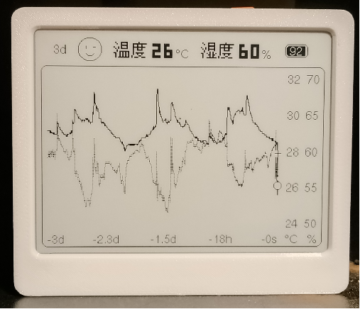
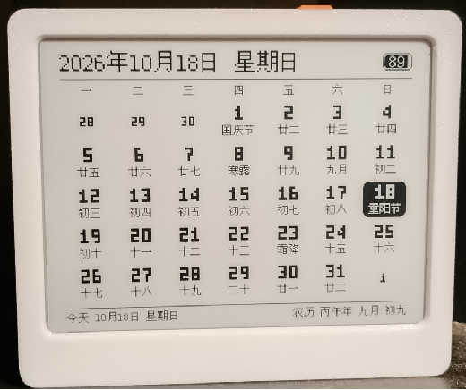
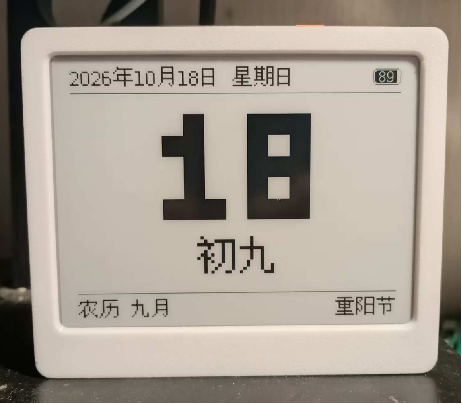
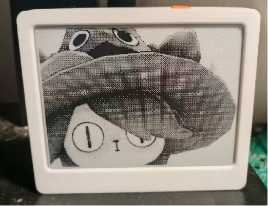
现在不激活也能用全部功能，唯一区别是循环里多一页版权页
想知道昨晚几点开始降温，对不起，没有历史。
普通屏断电即黑，所以画曲线的设备都拖着一根电源线。
买一台装一个，换牌子再装一个，安卓和 iOS 还各一套。只想看一眼，先注册个账号。
墨水屏断电留影，两节干电池画一年曲线；浏览器打开就能看历史、导数据，不注册也不上云。
CH584F 单芯片 · 4.2″ 墨水屏 · 磁吸上墙 · 0 根线
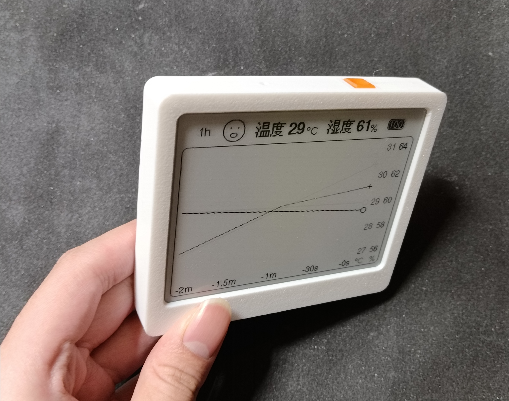
切页面
趋势 → 万年历 → 今天 → 壁纸，四页循环，切换即整屏刷新。
切时间窗
12 档：1h 到 30d，按真实时间比例重画，不整屏刷新。
开蓝牙
只开 60 秒广播窗口，连上就保持，断开自动重开一窗。
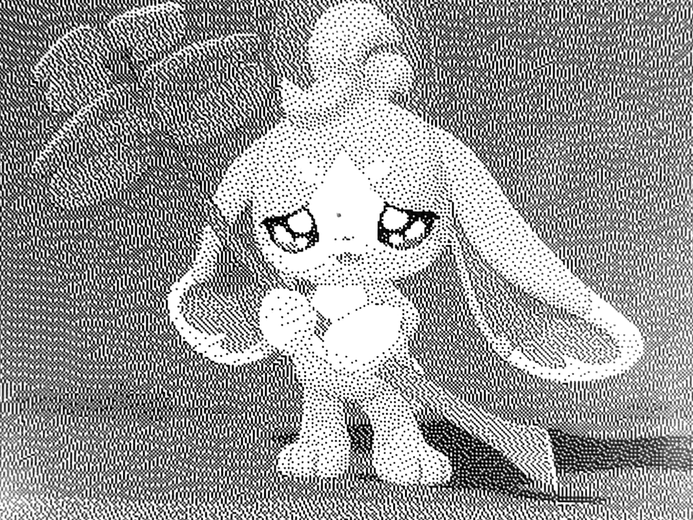
天线照官方参考留足净空。开源版 0 Ω 直连够用，要过认证再上 VNA 调。
源端匹配吸收反射，时钟与数据线包地隔串扰。上电即过，零整改。
硬件 2.1 V 下限，软件 2.2 V 停刷，留 0.1 V 余量防低压刷屏异常。
远端 · 开槽 · 不铺铜 · 隔间 · 通气孔。蓝牙满载 30 分钟，读数不动。
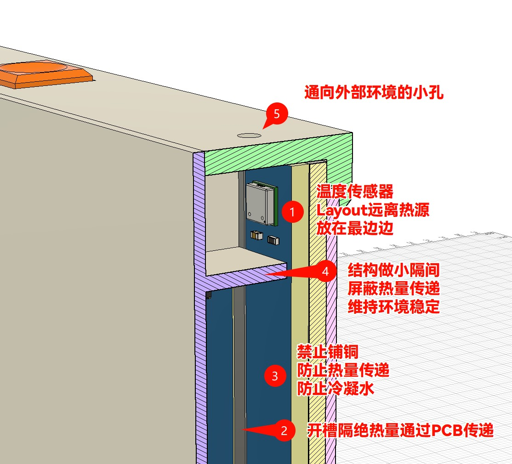
造最坏工况：蓝牙持续连接 30 分钟，射频与主控同时满载发热
上热成像仪：红外扫整机，看隔间里有没有热点、热流有没有绕进来
定判据：同一时段读屏上温湿度，读数随发热漂移就说明隔离失败
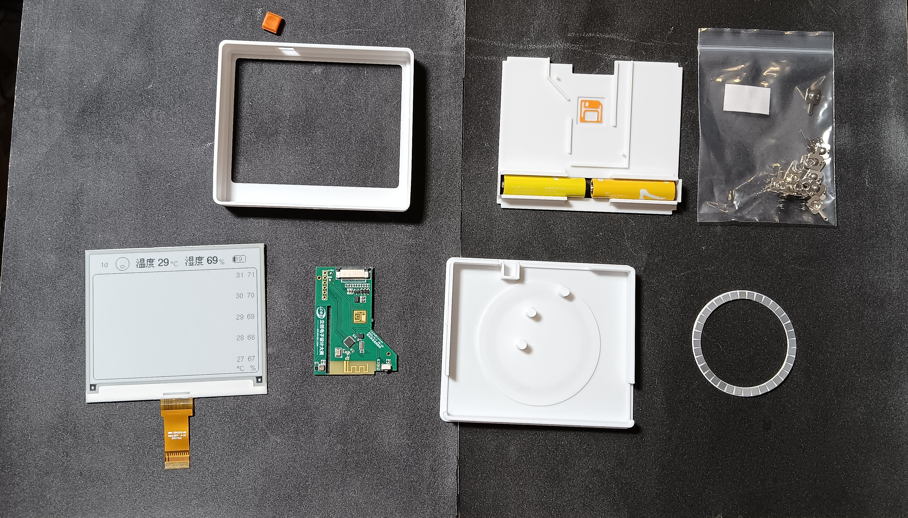
每一场都同一个结构：问题是什么 → 做了什么 → 结果多少。
一年 525,600 次采样，只花掉电池的 1.2%。同一节电池，刷屏要吃掉 62%。
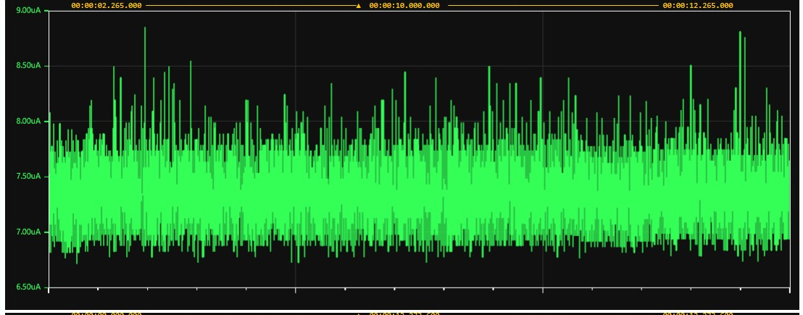
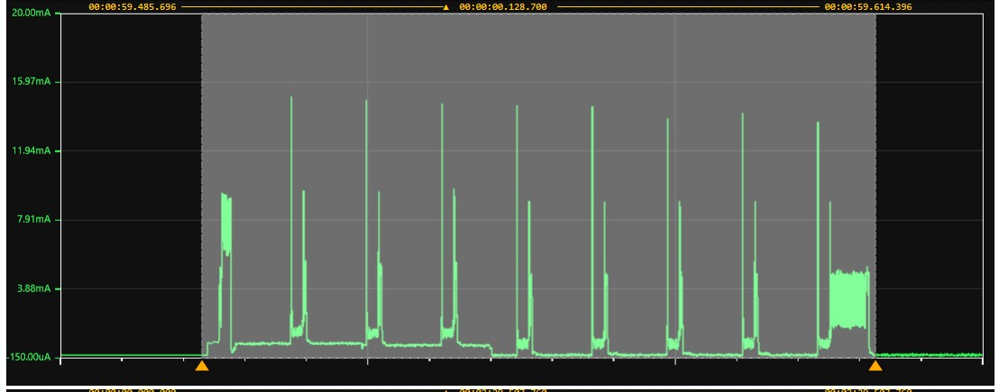
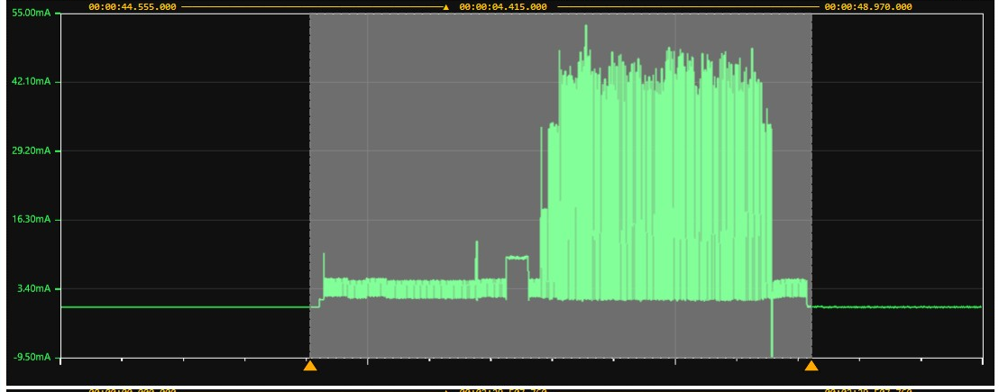
5.78 µAh / 次 × 11 + 7.16 µAh × 1 → 平均每刷 5.9 µAh，比次次全刷省近两成。
| 数据有多老 / 什么窗口 | 刷新间隔 |
|---|---|
| 15 分钟以内 | 1 分钟 |
| 15 分钟 ~ 1 天 | 5 分钟 |
| 1 天以上（1h–3d 档） | 15 分钟 |
| 满 7 天 / 7d、15d 窗 | 1 小时 |
| 30 天窗（1 px = 2.25 h） | 6 小时 |
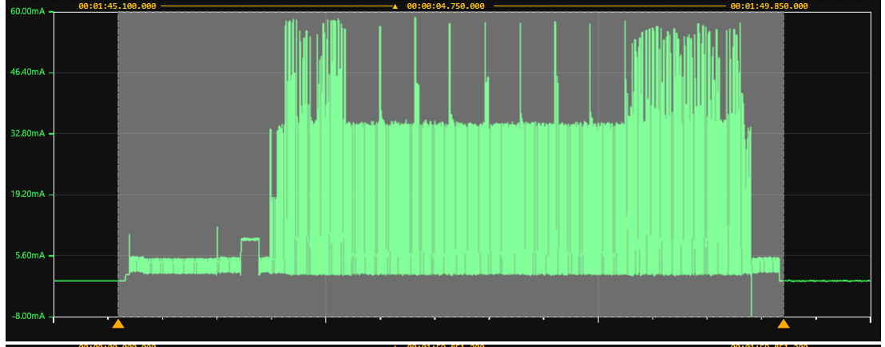
同一节电池，间隔拉长一档，刷的次数按倍减，续航就按倍涨。
| 刷新间隔 | 每天刷 | 一年刷 | 预计续航 |
|---|---|---|---|
| 5 分钟常挂客厅，天天看 | 288 次 | 105,120 次 | 1 年 153 天 |
| 15 分钟日常节奏的平衡点 | 96 次 | 35,040 次 | 3 年 163 天 |
| 6 小时30 天档挂墙，靠日历提醒换电池 | 4 次 | 1,460 次 | 10 年 324 天 |
再压 2 µA 待机，一天只省 3%；把间隔拉长一档，续航成倍往上涨。力气要花在刀刃上。
7.33 微安不是这颗芯片的下限。再往下还压得动，只是省下来的不够抵代价。
内存保留的睡眠：历史、设置都还在，RTC 走时不停，醒来接着干活。整机待机 7.33 微安。
掉电模式：只留 RTC 计时；到点唤醒相当于复位重来，待机能再压低一截。
一年待机总共只花六十多毫安时，刷屏才是大头。为省这几十毫安时把开机、历史恢复全重做一遍，不划算。
待机一年六十多毫安时，整机一年四百多毫安时：待机只占不到六分之一，剩下全是刷屏。把待机再砍一半，一年省下的电还不到总量的十分之一。
while(1) {
Button_Poll(); // ① 按键
update_sleep_gate(); // ② 能不能睡
TMOS_SystemProcess(); // ③ 采样在这
Button_Poll(); // ④ 醒来即响应
AppDisplay_Poll(); // ⑤ 画一步
AppCommunication_Poll(); // ⑥ 发一步
}
单核 MCU 配内置蓝牙协议栈，只能用 TMOS：协作式、无抢占、每个任务自己让出。
到点或收到事件才被叫起来，跑完自己 return。没有独立任务栈，RAM 省下来留给历史缓存。
同一时刻只有 1 个任务在跑。它不让出，后面所有任务都得等，包括蓝牙协议栈。
必须短于蓝牙连接间隔的一半。间隔 7.5 毫秒时只有 3.75 毫秒，超了就是断连加任务饿死。
把长活切成小段，每段都在几毫秒内还回主循环。3 处最耗时的活儿是这么处理的。
| 耗时操作 | 怎么拆 |
|---|---|
| 温湿度采样 | 等传感器转换的那段时间分步推进，不占住主循环 |
| 墨水屏刷新 | 拆成 5 步：复位、等 BUSY、DMA 分段传输、刷新、休眠 |
| 历史导出 | 分多帧发送，每帧 192 字节，带进度、可取消、有超时保护 |
没人跟它抢 CPU，按需醒来就一口气干完，干完立刻睡。拆太碎反而多付唤醒和切频的开销。
协议栈要按连接间隔准时响应，每一步都得短，让它随时插得进来。
整机只有 2 档主频，用哪一档，看这一段是算得多，还是在等。
重采样、拼页、把像素排进缓冲，全是计算，CPU 一刻不停。这时拉满，拿算力换时间。
缓冲推给屏幕基本是等 SPI 搬数据，CPU 在空转。降到 1/5，省电，也不耽误进度。
不留在循环里空转，直接睡到下一个节拍。醒来第一件事再决定要不要拉频。
只有 2 种情况会拉高：正在画，或者蓝牙开着。其余时间一律 13 MHz。一次刷屏里，主频会在 2 档之间来回切好几次。
分钟级存 30 天要 43,200 个点，96 KB RAM 只装得下四分之一。
它不追求快，追求的是几乎不耗电：手机、电脑、网页都能直接连它，不用装驱动，也不用装 App。
让手机或电脑，和几米外的一个小设备，互相递几十个字节。手环、温湿度计、门锁、电子价签，用的都是它。
一次只能带 20 到 244 个字节。40 KB 的历史要拆成两百多帧才发得完。
不保持「一直连着」，而是隔一段时间才通一次话，这个间隔可以在 7.5 到 30 毫秒之间约定；没话说的时候，芯片接着睡。
Wi-Fi 拿来传视频和大文件；低功耗蓝牙拿来递一个温度、一条命令，然后马上回去睡。
蓝牙设备不会「插上线就能通」，得先互相找到、再约好怎么说话。顺序是固定的三步。
设备上电后，每隔一段时间往外广播一次，包里写着自己叫什么、能干什么。这一步叫广播。
手机或电脑扫到这个广播，发起连接。连上之后就不再喊了，改成一对一。
连上之后双方按约定的间隔互发小包。但发过去的那串字节对方怎么解释，得有统一格式。
每家的设备都自己定义字节含义，手机就不知道该问谁要温度、往哪儿发命令。BLE 把这件事标准化了，那套格式有名字，下一页讲。
上一页说的「统一格式」叫 GATT。设备把自己会的事列成一张表，表分三层。
一组相关功能打个包。标准的有温湿度服务、设备信息服务；本机自己定了一个 0xFFE0。
真正收发数据的那一项，挂在服务下面。0xFFE1 用来收，0xFFE4 用来发。
每个特征先声明自己能干什么：可读、可写、可通知。没声明的操作，浏览器那边直接失败。
蓝牙规定了一次最多塞多少字节，这个上限叫 MTU（最大传输单元）。默认只有 23，扣掉 3 字节包头，实际能带 20 字节；双方协商后可以放大到 247，实际带 244。再大就得拆。
连上之后双方约定多久通一次话，7.5 到 30 毫秒。间隔越短传得越快，也越费电。
导出一块 208 字节的数据：上限还是 20 时要拆 11 包，放大到 244 时一包就过去。
每一次写、每一条通知都是一个有边界的独立消息：写 10 字节过去，对面就收到 10 字节。
40 KB 要拆成两百多块接成一条连续的流。接起来之后，哪几个字节是一条命令就没人管了，只能自己定「帧」：在每段数据前面加几个字节，写清这段多长、是什么命令、有没有错。
蓝牙联盟预先定义了一批服务和特征，含义固定、长度固定，所有厂家的设备都照这个来。
电池服务 0x180F 下面挂一个电量特征 0x2A19，就是一个 0 到 100 的百分数。
环境传感服务 0x181A 下面，温度是 0x2A6E、湿度是 0x2A6F，各是一个定长数值。
设备信息服务 0x180A，厂商名、型号、固件版本各占一项，方便对方认出你是谁。
用标准特征报的数据，任何手机、任何系统都认识，不用装 App，也不用看说明书。手机上能看到蓝牙耳机电量，靠的就是这一项。
标准服务就一个温度值、一个湿度值，定长、语义固定，适合读一次现在多少度。
40 KB 历史要拆包、标位置、能报进度；一张 15,000 字节的图要压缩、拆包、写进设备存储；再加上设置、激活码、校时、重启。
这叫透传：管道只管搬字节，字节是什么意思由两头自己约好。所有命令塞进同一条通道，用类型字段区分，一问一答按帧 ID 配对。加一个新功能只是加一个类型号，表不用动。
省电路子不一样，设备醒来的方式就不一样。市面上八成产品落在这四种里。
每隔一分钟广播一次，把温湿度直接塞在广播包里，播完就睡。不需要谁连它，也不管有没有人收。
按下才广播一次，发完就完事，不等谁回应。平时完全静默。
每十几分钟、半小时或一小时上报一次。可以约定唤醒时刻，到点醒来开个连接窗口传完，接着睡。
那只能把广播间隔拉长、低占空比地等着，代价是连接来得慢，续航也差。
平时不广播、不等待、不连接；长按之后才开 60 秒窗。想连的人在这 60 秒里连上，过时不候。
它不做网关、不做实时推送：不需要定时广播温湿度，不需要客户端定时来连，也不需要周期醒来扫别人。所以蓝牙默认彻底关死。
同样是发一包数据，蓝牙给了三种发法。选哪种，决定了丢了之后谁来兜。
每发一包，对面回一个回执，确认收到了。可靠，但一来一回，速度差不多减半。
发完就走，不等回执。速度拉满，代价是丢了不知道，得靠上层自己兜。
方向反过来：设备主动把数据推给浏览器，不用浏览器来问。导出历史用的就是它。
发历史是设备往外推，用通知；发壁纸是浏览器往里灌几百个小包，用无应答写。代价落在两件事上：进度得设备端自己数，出错得靠最后一道校验发现。接下来两页分别讲这两件。
30 天一共 10,080 个点，光历史本身就占着 40 KB 内存，腾不出第二份来打包，那就边读、边发。
192 字节数据加 16 字节帧头，这块发完才装下一块。整条链路没有队列，只有一个缓冲。
帧按 MTU 减 3 切开，MTU 从 23 起、协商后自适应；每轮循环最多推 5 包，把 CPU 让给采样和刷屏。
发到哪儿了每往前挪一次就重新计时，3 秒没挪动才判失败。走得慢但一直在走，不算卡死。
40 KB 分两百多帧发完；导出期间采样、显示、按键照常，只冻结历史写入。
反方向是把壁纸推进设备：用无应答写把速度拉满，代价是每包发出去不知道到没到。
一张 400×300 的单色图不小，直接发要拆成很多包。浏览器先把它压缩一遍，体积小下去，包数跟着少，传得就快。
几百个小包连着发，每包都不等对方确认。速度快，代价是发出去不知道到没到。
设备自己累计收到了多少字节，每满 1024 字节回一条通知给网页，进度条就是靠它走的。
每包都带自己在整张图里的位置；整张传完核对一次校验值，对不上就重传，不会把半张图当成传完。
小批量 30 套均摊，主控只有约 3.5 元，
大头是屏幕和主板。
量产拼板后，电子单板能压到 10 元以内，
不含屏幕。
| 项目 | 单套 |
|---|---|
| PCB 打样 + 物料 + SMT | 19.1 元 |
| 4.2″ 墨水屏 | 18 元 |
| 电池 + 卡簧 + 磁铁 | 8 元 |
| 3D 打印外壳（50 g） | 10 元 |
屏幕是闲鱼收的二手回收屏，来源随时可能断，也可能涨价。
需求摸不准，不敢先囤一批板子压在手里。
拼不过功能堆满的墨水屏，囤了怕滞销。
要挂机一年半载不出问题，才敢卖套件。
外壳要开注塑模，板子要几十到几百块一起挂机；打样排期、器件供货也得一条条跑通。
技术支持、产品维护与固件迭代；做过不少低功耗物联网和消费类产品。
锂电池、外挂 RTC，等这一版挂稳了再看。
思路、协议、实测数据、上位机，都在仓库里。只有固件，我发的是 hex。
原理图、PCB、结构件模型、蓝牙协议全表、网页上位机，还有每项取舍背后的实测数据。
不强求拦住谁，只是不想把最后这一步也递出去；剩下的，按公开的思路都能自己补回来。
自己下厨也能做出来，只是要重新买菜、重新试错、重新洗锅；买一份现炒的，当场就能吃。
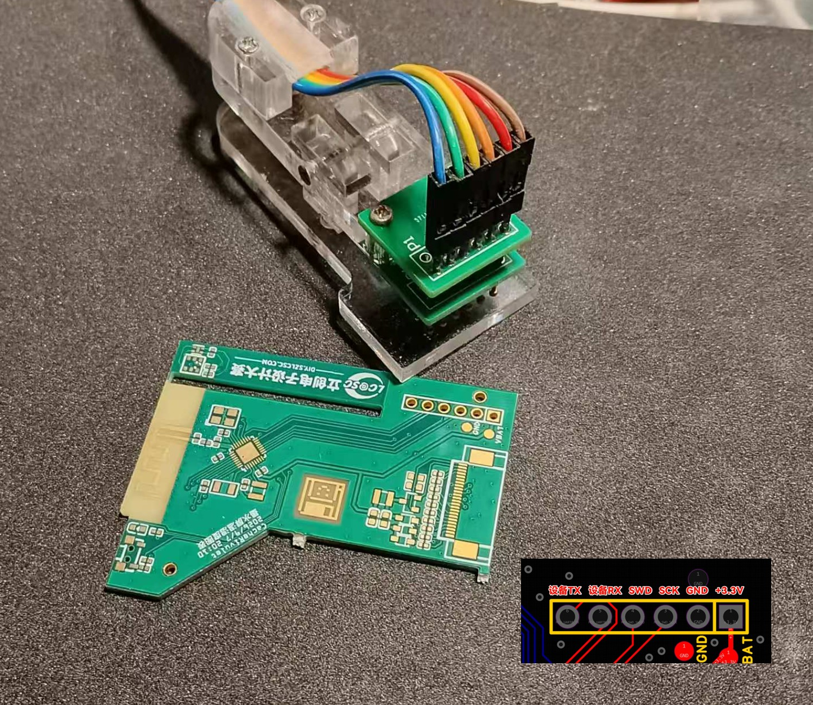
这颗是 RISC-V 内核。ST-Link、J-Link、DAP-Link 都是配 ARM 的，认不了它。
WCH-LinkE 有两种模式，默认那档是给 ARM 的。工具里要认成 RISC-V Link，再选 WCH-LinkRV。
上一手通常会把调试功能关掉，WCH-LinkE 直接连是连不上的。按住橙色键不放，再上电或接上烧录夹，让芯片进 Bootloader 等下载。
完全断电：拔掉电池、断开一切供电，芯片必须真的掉电
按住橙色键不放：它就是 Boot 脚，按住等于把它拉低
上电：芯片只在上电瞬间采样 Boot 脚，这一步不能反
松开：芯片停在 Bootloader，WCHISPStudio 能认到 BOOT 设备
它会全片擦除，并把两线调试口重新打开；之后接 WCH-LinkE 走 SWD 就正常了。
只有上电复位才采 Boot 脚，按复位键不算。
10 秒没被工具认到，或 60 秒没操作，芯片自己退出，跑回用户代码。
程序区前 4K 还是空白的片子，上电自动停在 Bootloader。
WCH-LinkUtility 里选「上电前擦除」，上电瞬间抢先擦掉用户代码。
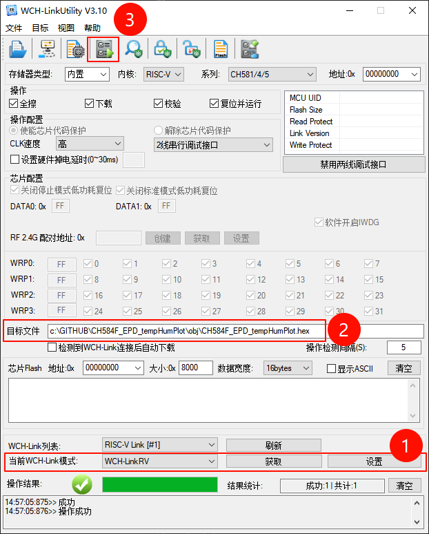
选文件：系列 CH581/4/5、内核 RISC-V，目标文件指向最新的 .hex
勾选项：全擦、下载、校验、复位并运行，四项都打勾
点下载：窗口右下角出现「成功 1、共计 1」就算过
连一次网页，系统信息末尾就是固件编译时间，和下载的文件对得上就是这一版。
5 分钟刷档的实测外推
最省档 10 年 324 天
一年全部采样的耗电，电池的 1.2%
小批量整机成本，电子单板还能压到 10 元
不激活也能用全部功能，只多一页版权页；预编译 hex 免费激活，源码照文档自己写也欢迎。